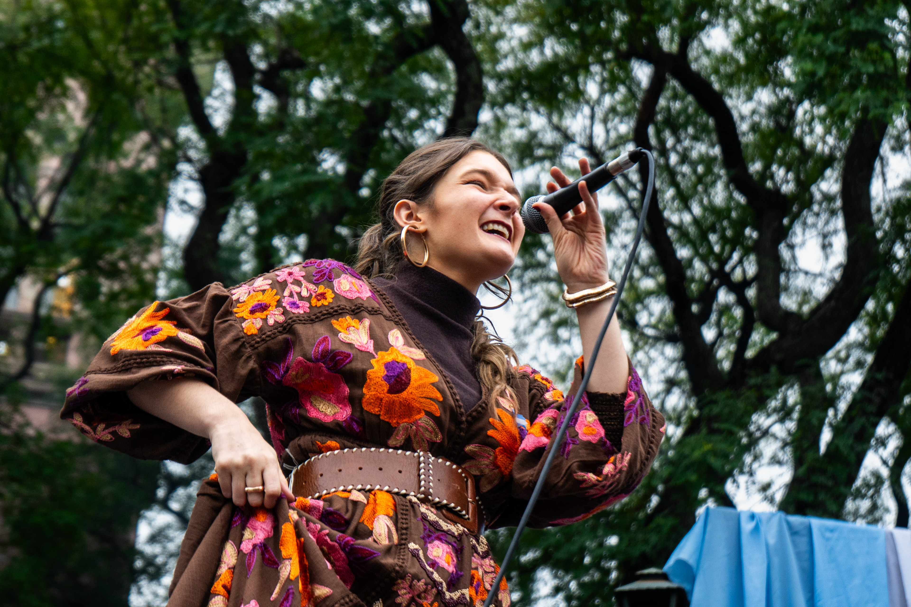
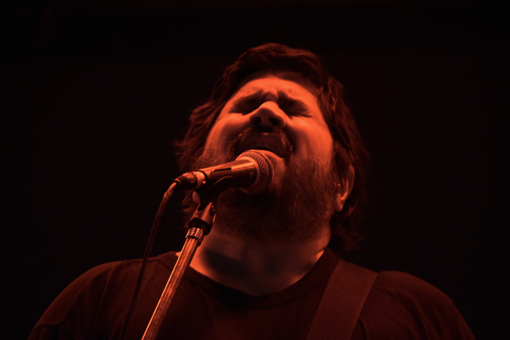
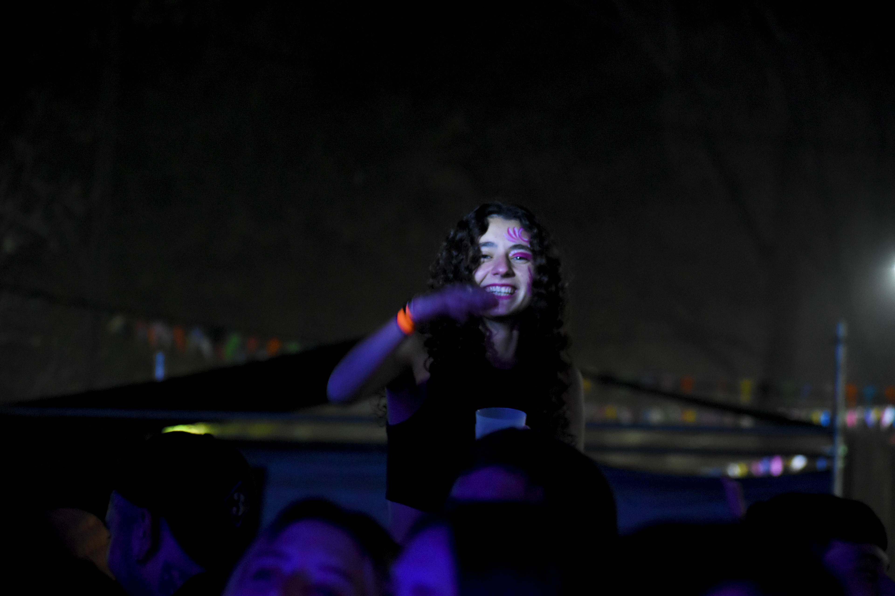
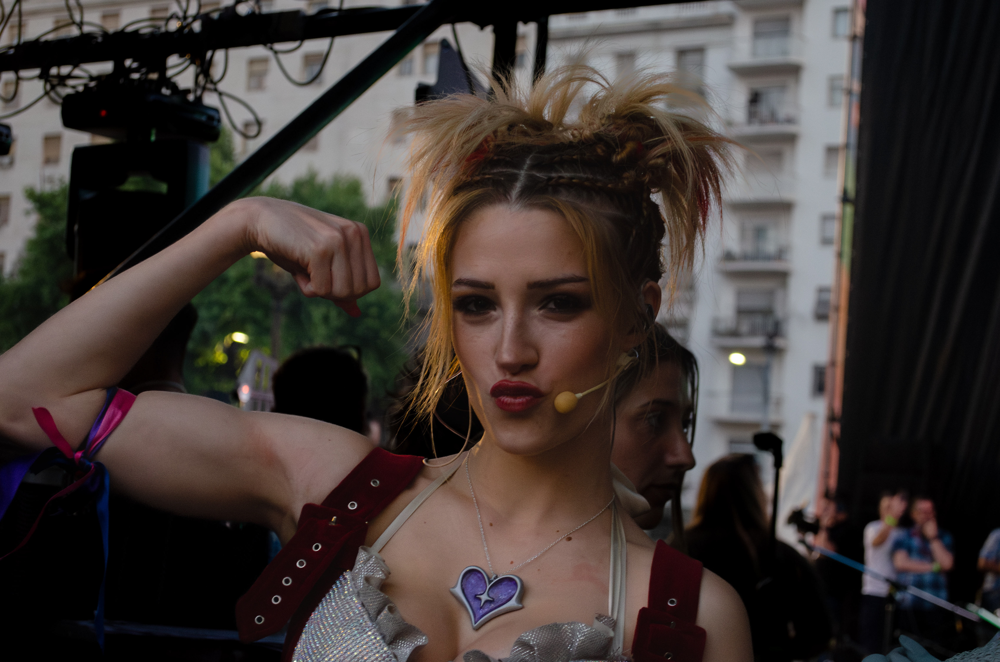
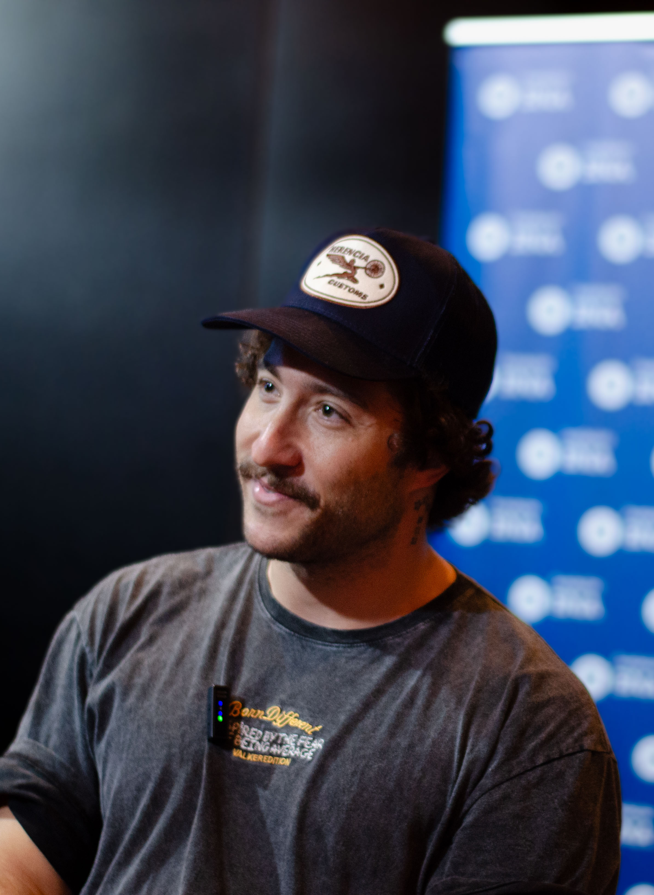
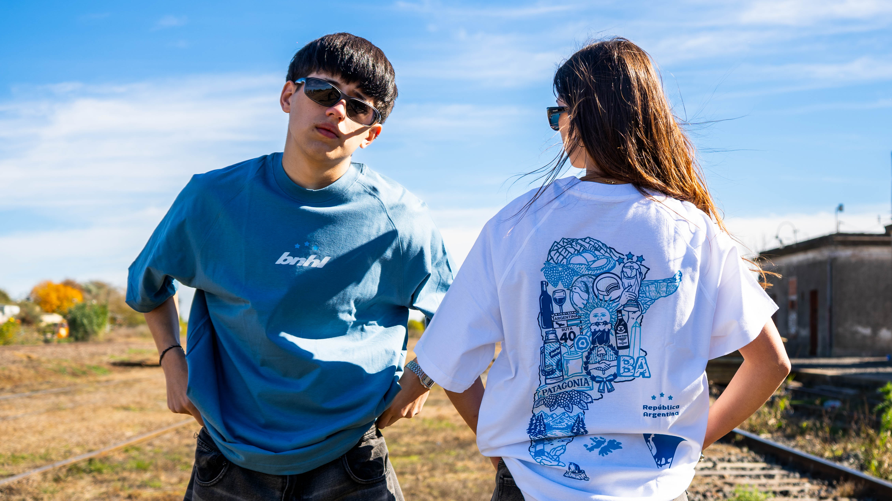
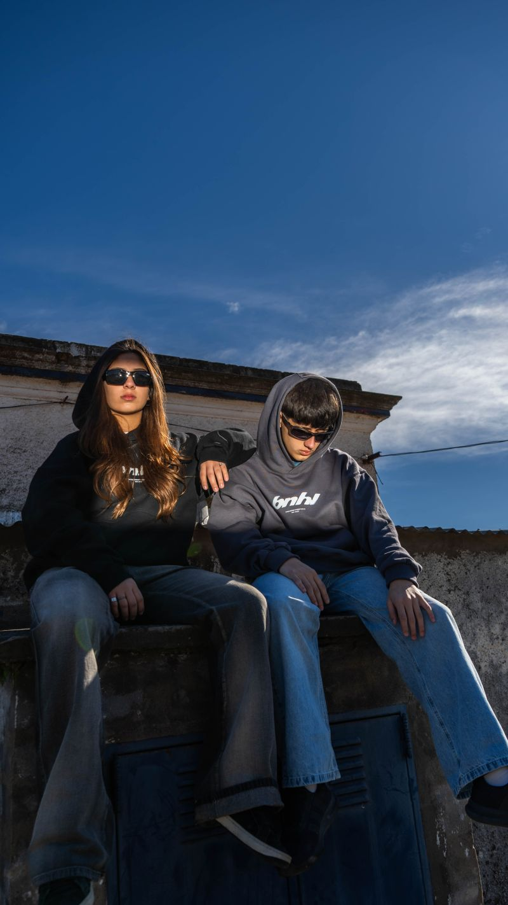
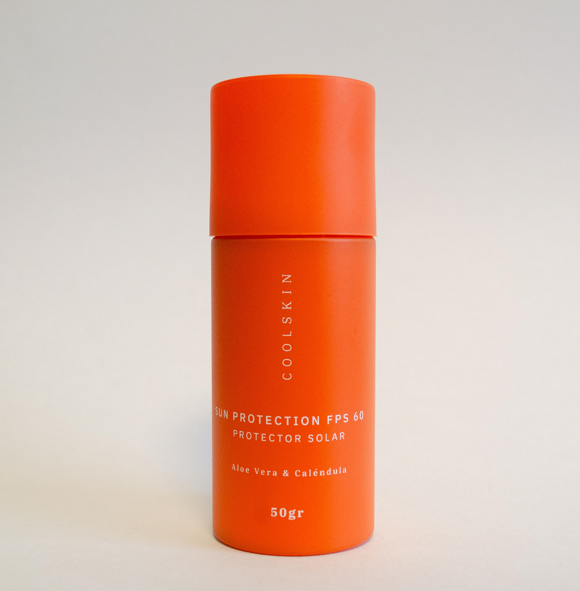
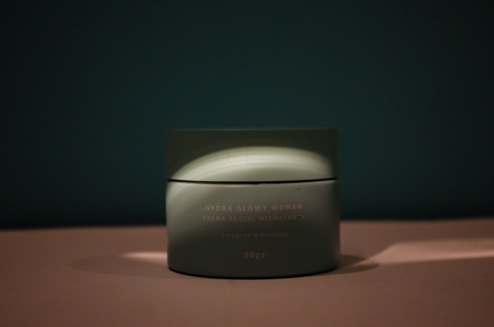
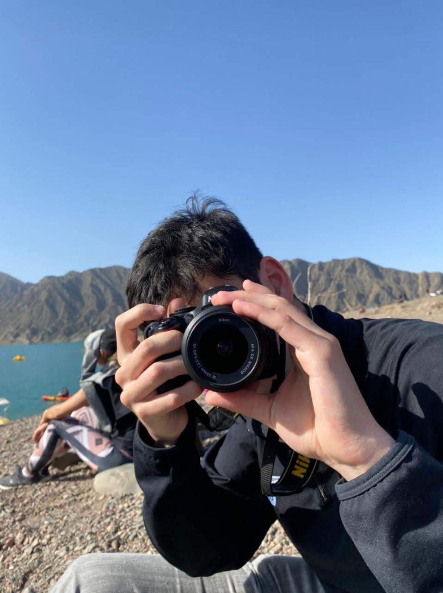

01
Fotografía de conciertos
Música en vivo







Fotografía & Audiovisual
Fotógrafo especializado en música en vivo, eventos y proyectos documentales.
Estudiante de Artes Audiovisuales con experiencia en cámara e iluminación, abordo cada proyecto desde una mirada técnica y narrativa.
Fotografía de conciertos




Cobertura corporativa & social




Marcas, producto & moda




Fotografía documental & social
 ★ Selección arte joven
★ Selección arte joven ★ Mejor artista local
★ Mejor artista local ★ Mención de honor
★ Mención de honor
Reels, institucionales & contenido digital
Reels & cortes

Edición
Reel corto 1

Edición
Reel corto 2

Edición
Reel corto 3

Edición
Reel corto 4

Edición
Reel corto 5
Videos institucionales

Video institucional
Scania — Apertura & cierre de mercado

Video institucional
YPF — Fin de año & Evolution

Video comercial
Hay Música — Promo sponsor

Recap anual
Sentido Común — Eventos 2024

Edición — Intro podcast
FBNA — Germán Beder

Edición — Video institucional
LDC Dreyfus — Innovaciones
Cine & publicidad

Dirección de fotografía
Café San Bernardo

Dirección de fotografía
Gran Freakorama — Cortometraje

Dirección de fotografía
Domingo — Cortometraje
El fotógrafo detrás del lente
Soy Franco Novo, fotógrafo y estudiante de Artes Audiovisuales. Trabajo principalmente en fotografía de música en vivo, eventos, marcas y proyectos documentales, con experiencia también en cámara e iluminación dentro del ámbito audiovisual.
Trabajo con una mirada documental que busca registrar lo que ocurre sin intervenirlo, pero entendiendo cuándo estar cerca y cuándo desaparecer.
Me formé mirando, escuchando y eligiendo quedarse con lo que importa. Creo que una imagen tiene que sentirse antes de verse. Por eso trabajo cerca del momento antes de que el momento ocurra.
Mi identidad está anclada en lo originario. El folclore, el tango, las raíces. No como nostalgia, sino como punto de partida para observar lo contemporáneo desde lo que lo sostiene. Lo que siempre estuvo, merece ser visto.

Tu foto acáCobertura de recitales, festivales y conferencias.
Cobertura corporativa y social. Registro de los momentos importantes para tu marca o institución.
Fotografía de producto, moda y marcas.
Fotografía social y de archivo. Mirada que construye relato, no solo registro.
Reels, videos institucionales y contenido digital para marcas y organizaciones.
Cámara e iluminación para cine, publicidad y producciones audiovisuales.